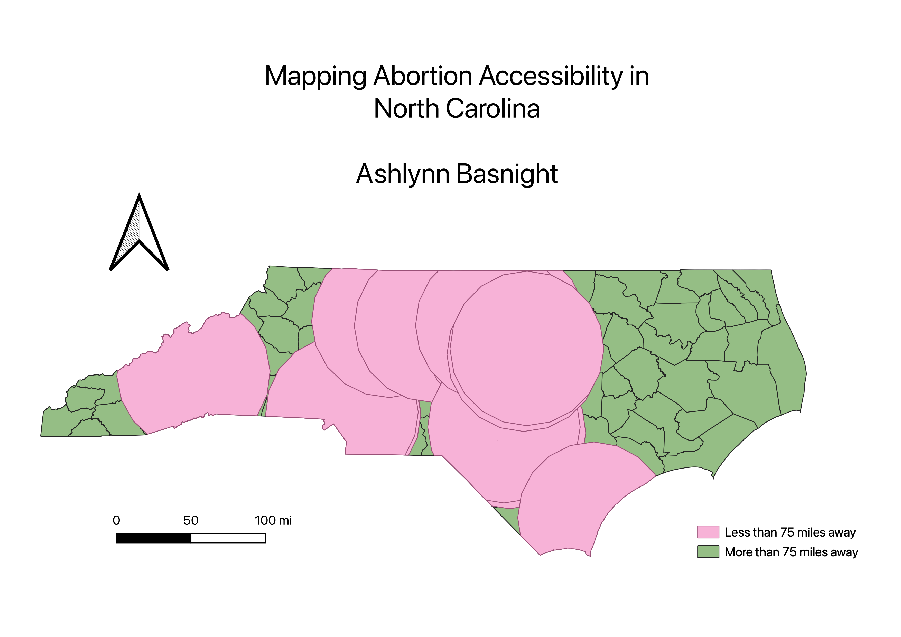

Homework 8: Geoprocessing Analysis
Ashlynn Basnight
Research Question
As reproductive rights have diminished in many parts of the country in the recent year, abortion access has become more relevant and pressing than it has been for many decades. This has certain research implications - specifically, who still has access to these services? While North Carolinians aren't in the position of many in other states, having to travel over several state lines to obtain care, access is still variable and is not the same even for those in North Carolina. This provides opportunities for spatial analysis: how does abortion access vary in North Carolina? Note: NC residents currently have legal rights to abortion, however, distance to abortion services requires time, money, and resources, creating a deep disparity in abortion access.
Methodology
T

Data used for this project
CSV dataset
Information used for CSV dataset
Link to clinic locations shapefile (used to create buffer)
NC counties shapefile source
NC counties shapefile